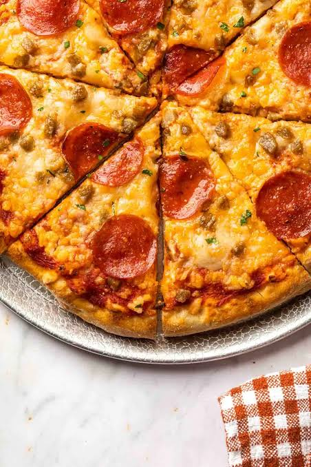
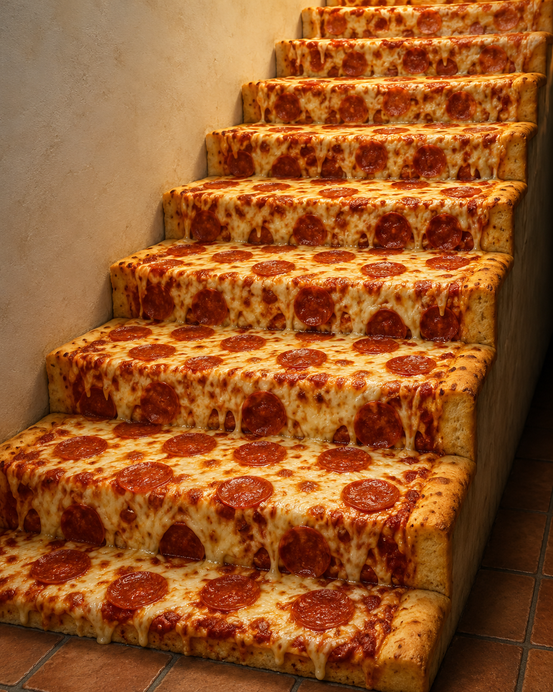

Home
lactose free pizza

Description
This homemade lactose-free pizza delivers all the crispy, savory satisfaction of a classic pizzeria pie without any of the dairy discomfort. Made with a golden-baked crust, rich herb-infused tomato sauce, and dairy-free mozzarella that melts just like the real thing, it is completely customizable with your favorite toppings.
Whether you are avoiding dairy or simply craving a lighter slice, this simple recipe comes together in under 30 minutes and tastes great straight out of the oven.
Ingredients
- 1 dairy-free pizza dough or store-bought base
- 1/2 cup tomato passata or pizza sauce
- 1 1/2 cups shredded lactose-free or dairy-free mozzarella cheese
- 1 clove garlic, crushed
- 1 teaspoon dried oregano
- 1 tablespoon olive oil
- Fresh basil leaves
- Optional toppings: sliced mushrooms, olives, bell peppers, or pepperoni
Steps
- Preheat your oven to 220°C (425°F) and place a baking sheet or pizza stone inside to heat up.
- Stretch or roll out your dairy-free pizza dough onto a sheet of parchment paper until it reaches your desired thickness.
- Mix the tomato passata with the crushed garlic, dried oregano, and a pinch of salt, then spread it evenly over the dough, leaving a small border for the crust.
- Sprinkle the shredded lactose-free mozzarella evenly over the sauce and add your favorite toppings.
- Lightly brush the outer crust edges with olive oil for a golden finish.
- Carefully transfer the pizza (still on the parchment paper) onto the hot baking sheet or stone in the oven.
- Bake for 12–15 minutes until the crust is golden brown and the dairy-free cheese is fully melted and bubbling.
- Remove from the oven, scatter fresh basil leaves on top, slice, and serve warm.
